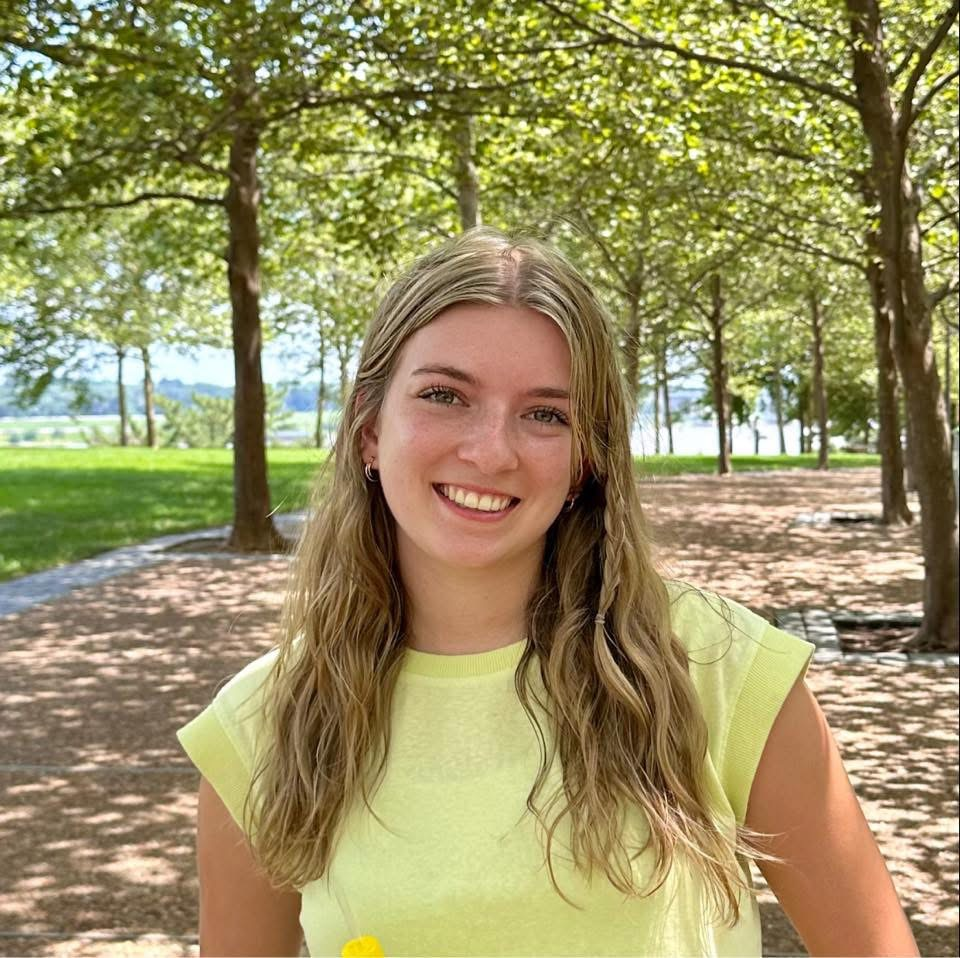

Featured Artist / Mixed Media
American, b. May 7, 2002

E.K. Wright — Artist Portrait, 2026 · Parade Collection
Eliza Kate Wright
American, b. May 7, 2002
Tyrannosaurus Rex
Mixed Media Sculpture, 2026
Artist, designer, and nursing student Eliza Kate Wright is known for her creativity, perfectionism, and unwavering commitment to excellence. Whether designing parade floats or large-scale installations, Wright believes that exceptional work demands exceptional effort.
Please do not feed the exhibits.
Constructed entirely in a residential studio — or, as the artist prefers to call it, "the driveway" — Tyrannosaurus Rex (2026) represents Wright's most ambitious float to date. Fabricated from lightweight structural materials and finished with theatrical surface textures, the piece achieves what few parade entries dare attempt: genuine awe.
The work draws its conceptual energy from the Night at the Museum tradition — the idea that history's most formidable creatures deserve not a glass case, but a second chance. Wright's T. rex doesn't haunt a darkened hall; it rolls.
"Art doesn't need a museum to feel magical — sometimes it just needs a driveway, a dream, and a dinosaur."
Visitors to Gallery IV are reminded that while the exhibits have been known to come to life after closing hours, all prehistoric specimens on the float have been certified as non-migratory for the duration of the parade route.
Study in Float Architecture
Preliminary framework and armature studies for the T. rex installation. Working models in foam, wire, and determination.
On ViewPortrait of the Artist at Work
Candid study of Wright in her studio practice. Notable for its depiction of creative intensity and scenic backdrop.
On ViewUntitled (Exhibit Label)
A self-referential work in the museum-label tradition. The label describes its creator; the creator created the label. Critics are divided.
On View